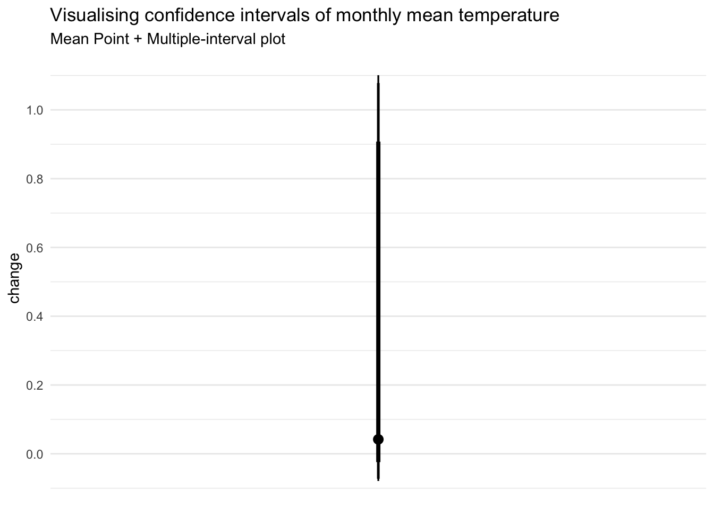

pacman::p_load(tidyverse, ggthemes, plotly, ggdist)Take-home_Exercise 3
Overview
In this take home we are going to visualise and analyse mean temperature in Changi station in December 2023, 2013, 2003, 1993, 1983.
Getting Started
Importing all the packages needed
Data Preparation
combining all the weather data across the years
period1 <- read_csv('data/DAILYDATA_S24_198312.csv')
period2 <- read_csv('data/DAILYDATA_S24_199312.csv')
period3 <- read_csv('data/DAILYDATA_S24_200312.csv')
period4 <- read_csv('data/DAILYDATA_S24_201312.csv')
period5 <- read_csv('data/DAILYDATA_S24_202312.csv')weather <- rbind(period1,period2,period3,period4,period5)changing the name of the variable and selecting the important data. furthermore, changing the data type fo day and year as categorical
weather <- weather %>%
mutate (mean_temp = `Mean Temperature (°C)`) %>%
select (Year, Day, mean_temp)
weather$Day <- as.factor(weather$Day)
weather$Year <- as.factor(weather$Year)Visualisation
Calendar Heatmap
plotting the calendar heatmap and including interactivity using ggplotly
p <- ggplot(weather,
aes(Day,
Year,
fill = mean_temp)) +
geom_tile(color = "white",
size = 0.1) +
theme_tufte(base_family = "Helvetica") +
scale_fill_gradient(name = "Temperature",
low = "sky blue",
high = "dark blue") +
labs(x = NULL,
y = NULL,
title = "Temperature on December in Changi Station Across Years") +
theme(plot.title = element_text(hjust = 0.5),
legend.title = element_text(size = 8),
legend.text = element_text(size = 6))
ggplotly(p)from the graph above we can see that the temperature in 2023 are higher than previous years. there are more darker shades of blue seen on the top part. However, seen from 1993 to 2013 there are not much movement of the temperature in between them. finally, in year 1983 the temperature are significantly lower as almost half of the day in December 1983 are on the lighter side of blue shade.
Line Graph: Temperature Movement Every 10 Years
Preparing Data
calculating the average temperature of December across years (1983,1993,2003,2013,2023)
weather_mean <- weather %>%
group_by(Year) %>%
mutate(temp = mean(mean_temp)) %>%
select (Year, temp) %>%
unique()head(weather_mean)# A tibble: 5 × 2
# Groups: Year [5]
Year temp
<fct> <dbl>
1 1983 25.4
2 1993 26.5
3 2003 26.6
4 2013 26.5
5 2023 27.3Visualising Line Graph
creating a line chart to show the increase of average temperature between each year.
p <- ggplot(weather_mean,
aes(Year, temp, group = 1)) +
geom_line() +
theme_minimal()
ggplotly(p)This line chart shows similar analysis with the calendar heatmap. The line chart show a moderate increase of temperature in 1993 and 2023. And, temperature between 2013 and 1993 are not fluctuating.
Point Interval: Temperature Change per 10 Years
Data Preparation
calculating the average temperature change every 10 years from 1983 to 2023
weather_changes <- weather_mean %>%
mutate(type = 1) %>%
group_by(type) %>%
mutate(change = temp - lag(temp, default = temp[1]))Visualising Point Interval
plotting the error bar of temperature change every 10 years using confidence level of 0.65 , 0.95, and 0.99
weather_changes %>%
ggplot(aes(x = 1,
y = change)) +
stat_pointinterval(
.width = c(0.65,0.95,0.99)
) +
labs(
title = "Visualising confidence intervals of monthly mean temperature",
subtitle = "Mean Point + Multiple-interval plot") +
scale_x_continuous(NULL, breaks = NULL) +
scale_y_continuous(breaks = seq(-.2,1.2,.2)) +
theme_minimal()
the findings in previous visualisation are also supported by the uncertainy here which tell us temperature fluctuation with different confidence interval:
99% : -0.09 to 1.1
95% : -0.08 to 1.05
65% : -0.04 to 0.9
Conclusion
The claim of temperature increasing by 1.4 to 4.6 degree Celcius cannot be support by our finding where we can 99% confidence that it would only be around -0.1 to 1.1 degree celcius temperate fluctuation. However, our data is using data for every 10 years. A different finding could be found by analysing other dataset or maybe another station/month of the year.